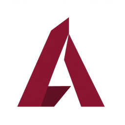
Solusi digital untuk membangun kehadiran dan meningkatkan efisiensi bisnis.
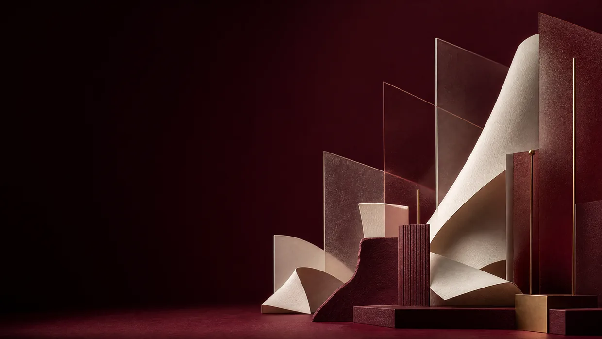
01 — Tentang Aksisoft
Aksisoft Media membantu UMKM, perusahaan, profesional, merek lokal, dan komunitas membangun kehadiran digital yang meyakinkan melalui website, aplikasi, serta perangkat kerja yang mendukung kegiatan operasional.
Mulai dari website company profile hingga aplikasi dan sistem khusus, setiap solusi kami rancang agar relevan dengan kebutuhan, mudah digunakan, serta dapat dikembangkan seiring pertumbuhan bisnis.
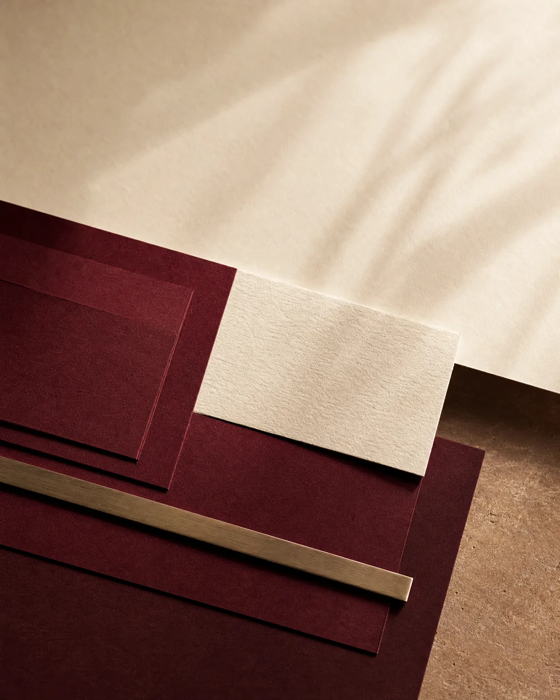
Fokus kami — menyederhanakan proses kerja, memperkuat komunikasi, dan meningkatkan kualitas layanan kepada pelanggan.
02 — Layanan
Kami mendukung perjalanan digital bisnis Anda, mulai dari membangun kehadiran online hingga menata proses operasional.
Landing page, website company profile, dan portofolio dengan desain responsif, waktu muat yang efisien, serta tampilan optimal di ponsel maupun desktop.
Portal berita, blog perusahaan, dan sistem manajemen konten (CMS) yang memudahkan tim menerbitkan serta mengelola artikel secara mandiri.
Kami menyunting Reels, Shorts, video promosi, dan video company profile dari rekaman serta materi merek Anda, dengan alur cerita yang lebih terarah dan konsisten.
Aplikasi web, dasbor operasional, dan aplikasi Android yang dirancang mengikuti alur kerja bisnis agar aktivitas tim lebih tertata dan terukur.
Layanan mencakup konfigurasi SPF, DKIM, dan DMARC, buletin, kampanye email, serta otomasi pesan untuk mendukung komunikasi pelanggan yang konsisten.
Perencanaan dan pengelolaan Google Ads serta iklan Facebook, Instagram, dan TikTok untuk menjangkau calon pelanggan sesuai sasaran bisnis.
03 — Portofolio video
Materi rekaman Anda kami olah menjadi Reels, TikTok, Shorts, video promosi, maupun company profile. Setiap video disusun dengan alur yang jelas, subtitle, dan elemen identitas merek agar siap dipublikasikan.
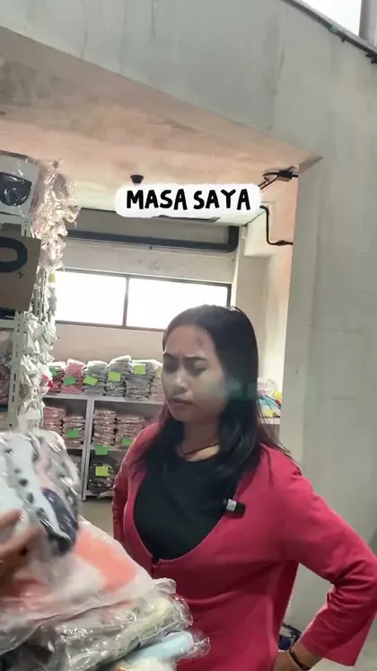
01:14Tur Gudang GrosirProduk & Retail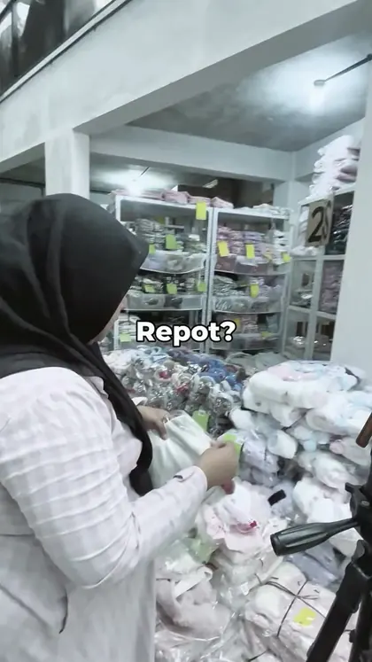
00:20Virtual Shopping GrosirProduk & Retail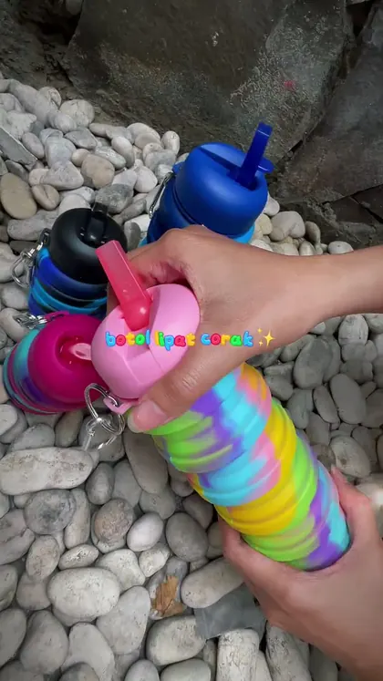
00:24Botol Lipat CorakProduk & Retail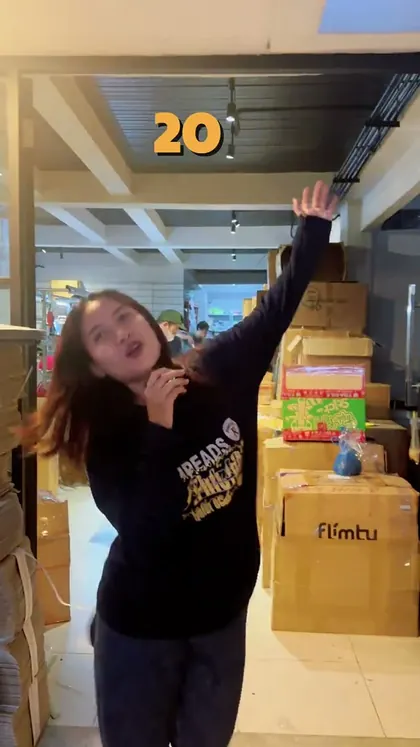
01:07Packing 20 KoliProduk & Retail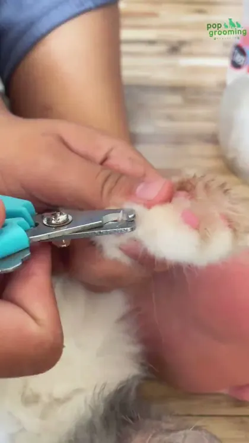
00:27Perawatan Kuku HewanPet Grooming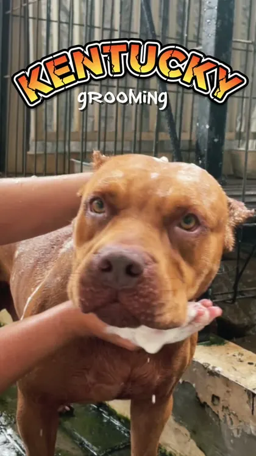
00:20Memandikan AnjingPet Grooming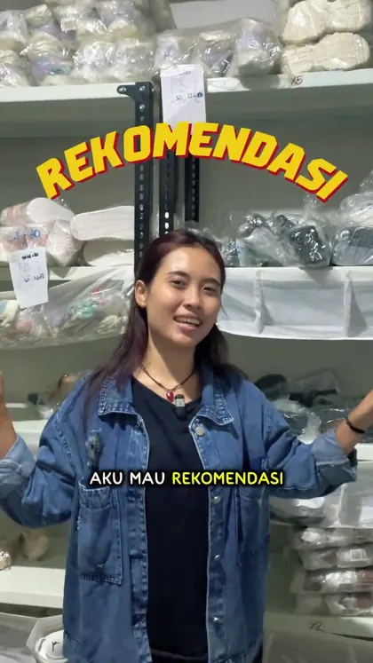
01:01Rekomendasi ProdukKonten Kreator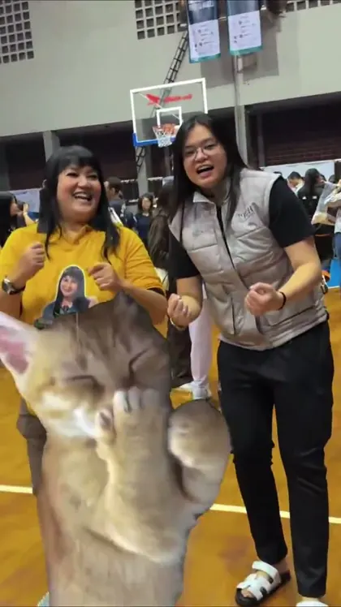
01:11Penutupan PORPROV IXEvent & Olahraga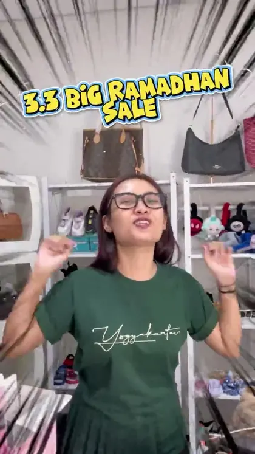
00:23Promo 3.3 Big Ramadhan SalePromosi & Iklan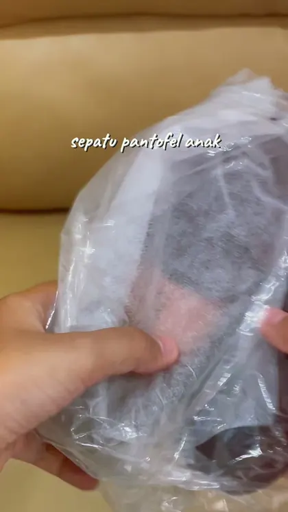
00:23Sepatu Pantofel AnakProduk & Retail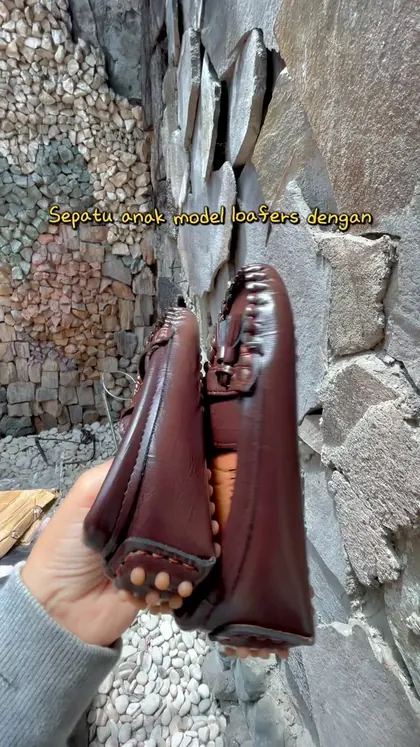
00:15Sepatu Anak Model TerbaruProduk & Retail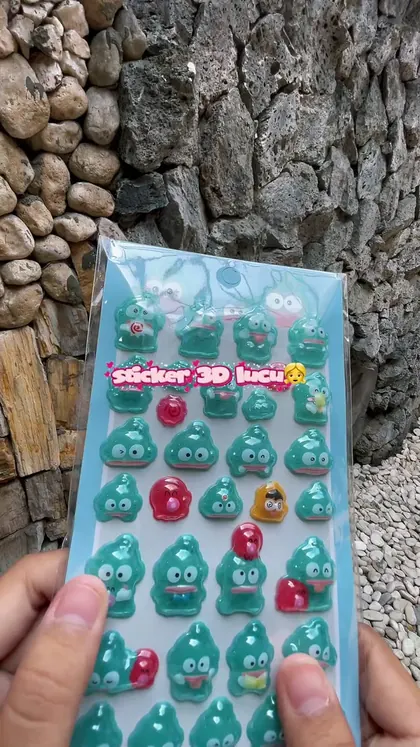
00:15Stiker 3D LucuProduk & RetailBerikut beberapa contoh hasil produksi video untuk kebutuhan promosi, katalog produk, layanan, dan dokumentasi kegiatan.
04 — Harga video
Setiap paket memiliki cakupan pekerjaan yang jelas. Untuk kebutuhan khusus, penawaran disusun berdasarkan durasi, kompleksitas produksi, dan materi yang tersedia.
Pilihan praktis untuk menjaga konsistensi konten media sosial.
Tampilkan keunggulan produk atau layanan melalui video promosi yang terarah.
Perkenalkan perusahaan, layanan, dan keunggulan bisnis melalui cerita visual yang terstruktur.
Cakupan pengerjaan
05 — Harga website
Harga mengikuti cakupan setiap paket. Ketentuan hosting dan domain tercantum pada masing-masing paket dan dapat dikonfirmasi sebelum pekerjaan dimulai.
Untuk bisnis yang ingin mulai membangun kehadiran online secara profesional.
Pilihan seimbang untuk menampilkan profil, layanan, dan informasi bisnis secara lengkap.
Untuk bisnis yang membutuhkan website lebih lengkap dan ruang pengembangan yang lebih luas.
Mengelola konten secara rutin? Gunakan website dengan CMS yang mendukung kerja redaksi.
06 — Aplikasi
Harga berikut merupakan nilai awal untuk pengembangan aplikasi web responsif dan Android. Lingkup fitur, kebutuhan integrasi, serta estimasi waktu akan ditetapkan melalui konsultasi dan analisis kebutuhan.
Pengembangan dimulai dari fitur inti yang paling dibutuhkan. Ruang lingkup akhir ditentukan bersama melalui konsultasi.
Biaya awal pengembangan aplikasi Android. Fitur dan alur penggunaan ditetapkan melalui konsultasi sebelum proyek dimulai.
Sistem siap pakai untuk mempercepat penerapan solusi operasional.
07 — Cara kerja & teknologi
Setiap proyek diawali dengan diskusi untuk memahami tujuan, kendala, pengguna, dan proses kerja Anda. Dari sana, kami menyusun ruang lingkup serta solusi yang realistis.
Memetakan tujuan bisnis, pengguna, serta kebutuhan prioritas.
Menyusun alur, fitur, jadwal, dan ruang lingkup pekerjaan.
Membangun solusi berdasarkan rancangan yang disepakati.
Memastikan fungsi berjalan dan pengalaman penggunaan sesuai kebutuhan.
Menyiapkan pengembangan lanjutan sesuai prioritas bisnis.
Teknologi yang kami pakai
Pemilihan teknologi didasarkan pada kebutuhan, keamanan, kemudahan pemeliharaan, dan rencana pengembangan produk.
08 — Produk
Kami mengembangkan produk digital untuk membantu bisnis, layanan lokal, pendidikan, dan operasional usaha.
Platform layanan lokal yang menghubungkan pemesanan makanan, belanja kebutuhan harian, dan pengiriman barang dalam satu aplikasi.
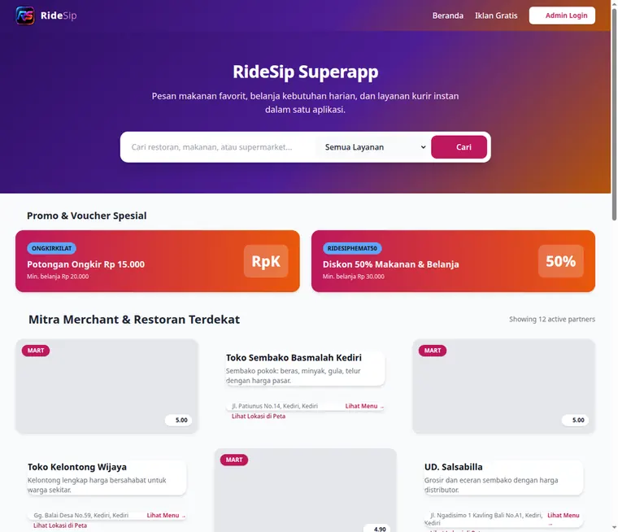
Platform terpadu untuk mengelola prospek, penjualan, proposal, faktur, proyek, tugas, dan layanan pelanggan.
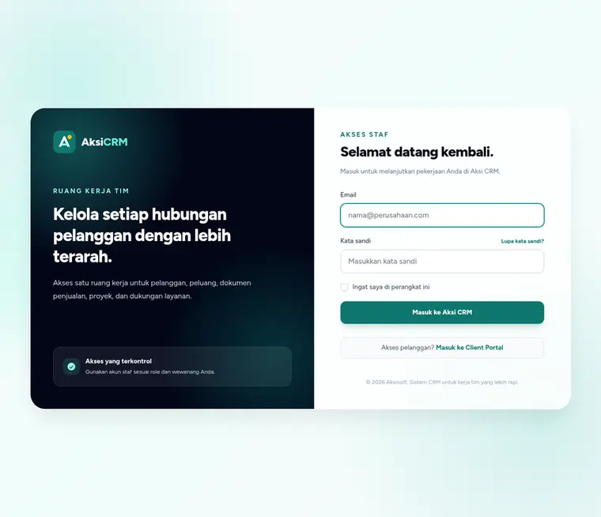
Sistem kasir dan operasional ritel yang mengintegrasikan transaksi, pengelolaan stok, pembelian, dan pelaporan.
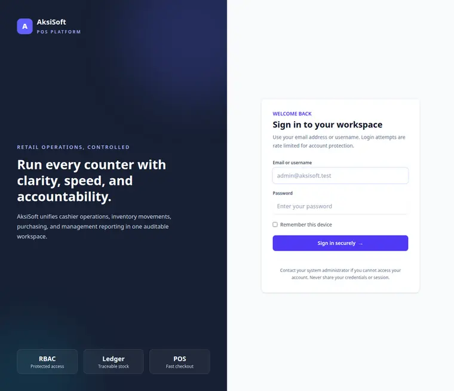
09 — Aksi CRM
Aksi CRM menghubungkan data pelanggan, prospek, aktivitas penjualan, dokumen, proyek, dan layanan purna jual dalam satu sistem. Tim dapat bekerja dengan informasi yang lebih terpusat, mengurangi pencatatan berulang, dan menjaga tindak lanjut tetap terpantau.
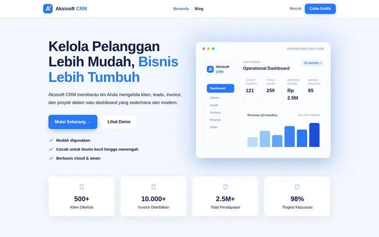
Contoh tampilan dasbor Aksi CRM. Informasi dan modul mengikuti konfigurasi sistem yang diterapkan.
10 — AksiSoft POS
AksiSoft POS mengintegrasikan transaksi kasir, persediaan barang, pembelian, dan laporan operasional dalam satu sistem untuk membantu pengelolaan toko lebih konsisten.
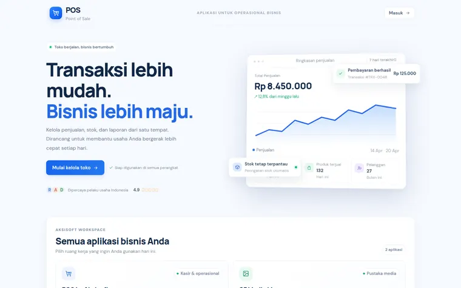
Contoh tampilan dasbor AksiSoft POS. Modul dapat disesuaikan dengan kebutuhan operasional toko.
11 — WebSekolah, MuslimHub & template
Website sekolah yang memuat profil, program, berita, galeri, pendaftaran peserta didik baru secara online, serta pemeriksaan status PPDB.
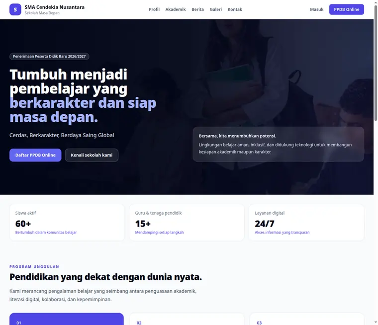
Platform layanan Islam yang menyediakan Al-Qur’an digital, jadwal salat, hadis, doa, panduan ibadah, serta asisten berbasis AI.
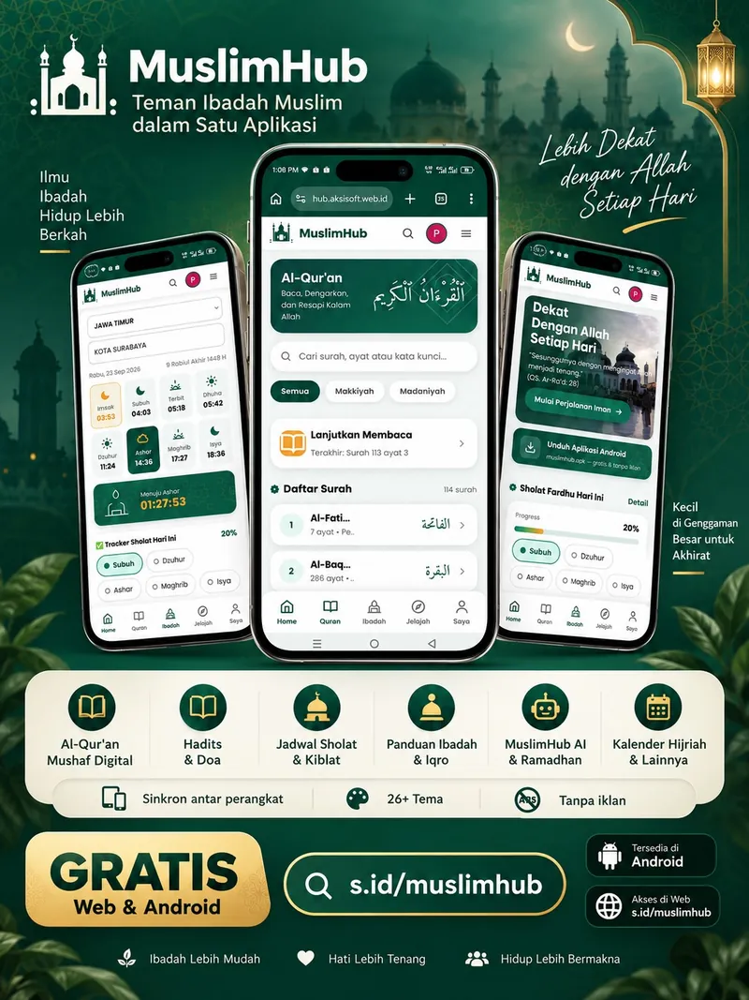
Lebih dari 30 template website untuk berbagai kebutuhan. Katalog tersedia melalui template.aksisoft.web.id dan Lynk.
Dari layanan lokal, retail, hubungan pelanggan, pendidikan, sampai ibadah.
12 — Portofolio Website
Beberapa website yang kami rancang, bangun, dan publikasikan — dari portal berita dengan lalu lintas tinggi hingga website perusahaan untuk kebutuhan katalog dan komunikasi bisnis.
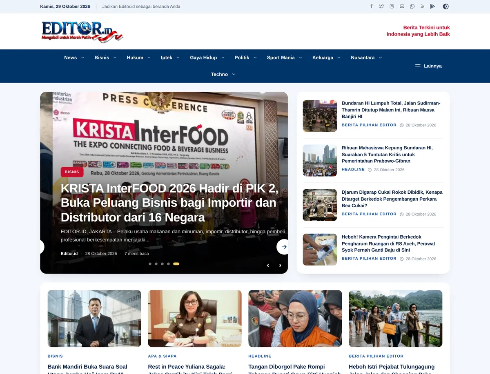
Portal berita dan referensi Indonesia dengan struktur kategori dan tata letak editorial yang ringan dibuka di semua perangkat.
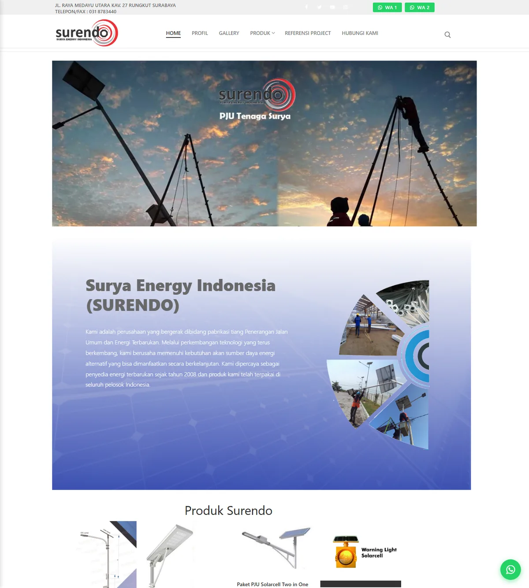
Website profil CV. Surya Energy Indonesia — pabrikasi tiang PJU dan energi terbarukan, lengkap katalog paket produk dan daftar klien.
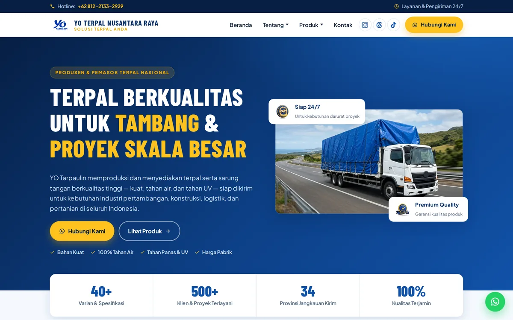
Website company profile CV. Yo Terpal Nusantara Raya — produsen & pemasok terpal nasional dengan katalog produk dan sistem pemesanan WhatsApp.
13 — Portofolio Aplikasi
Aplikasi Android yang kami kembangkan dari konsep, desain, pengembangan, hingga rilis publik di Google Play — untuk kebutuhan berita, kasir UMKM, utilitas, dan ibadah.
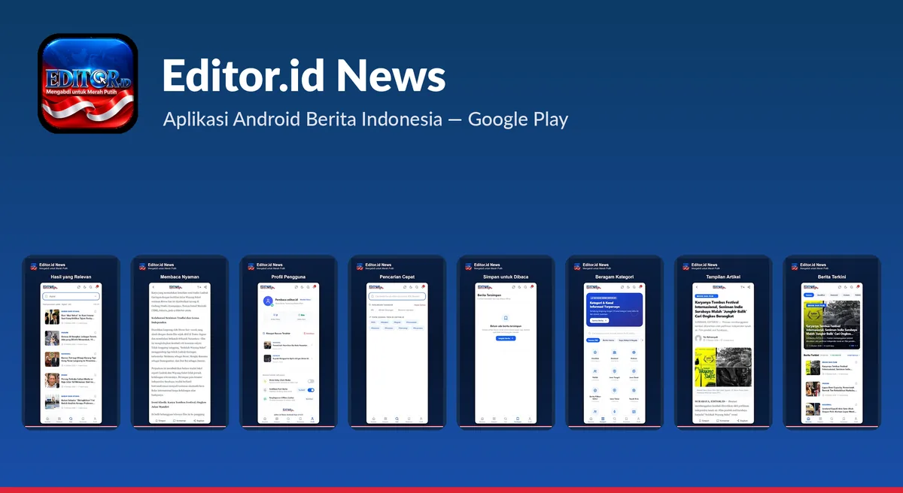
Aplikasi berita Indonesia untuk portal Editor.id — berita terkini, pencarian cepat, bookmark bacaan, dan kategori terstruktur.
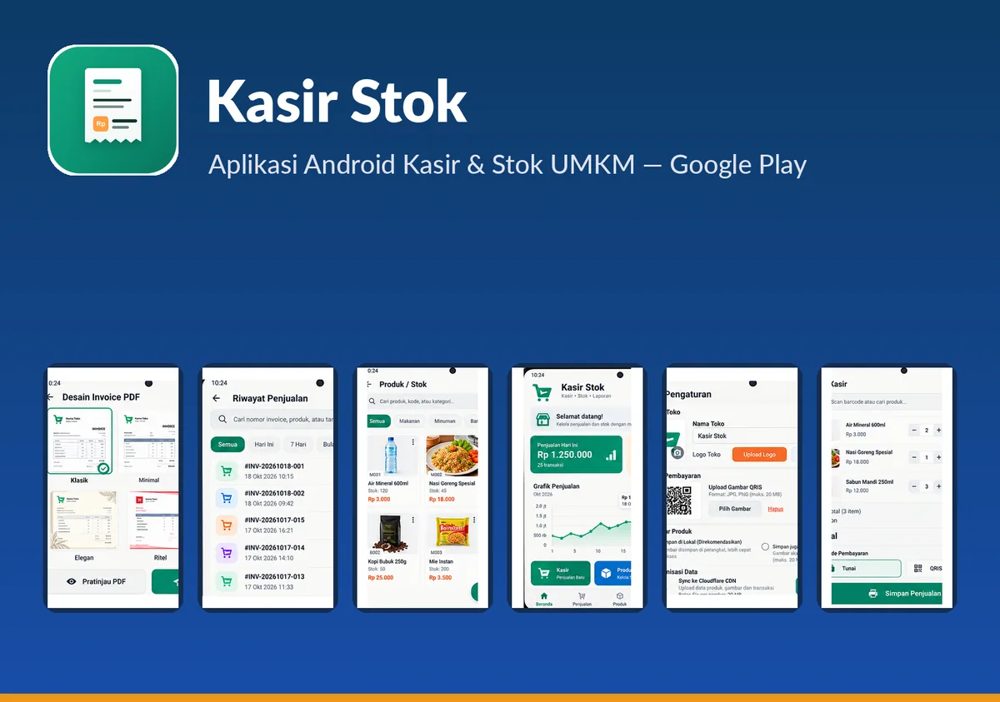
Aplikasi kasir & manajemen stok untuk UMKM — penjualan cepat via barcode, invoice PDF, QRIS, sinkronisasi awan, dan mode offline.
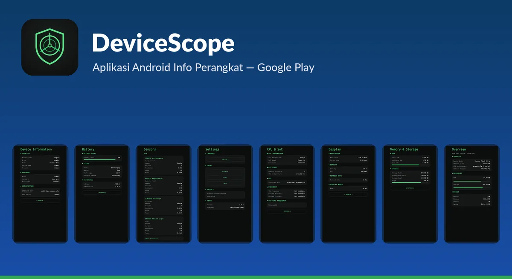
Aplikasi info perangkat Android — CPU/SoC, RAM & storage, baterai, display, dan sensor dalam UI terminal gelap bergaya dev-tool.
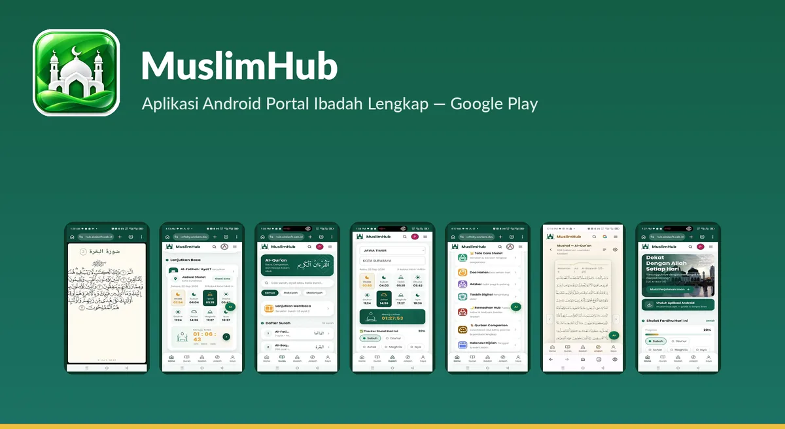
Portal Muslim modern & lengkap — Al-Qur'an digital, jadwal sholat, hadits, doa, tasbih, kalender hijriah, serta asisten AI.
14 — Showcase
Beragam produk Aksisoft dikembangkan dengan perhatian pada kemudahan penggunaan, kejelasan informasi, dan konsistensi pengalaman di berbagai perangkat.
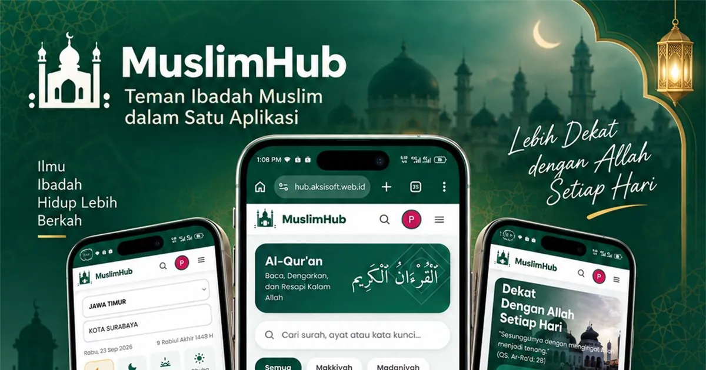
Contoh produk Aksisoft: MuslimHub, RideSip, dan WebSekolah. Kunjungi situs masing-masing untuk melihat informasi dan fitur terkini.
15 — Kenapa Aksisoft
Kami mengutamakan kebutuhan yang jelas, ruang lingkup yang terukur, dan solusi yang dapat digunakan.
Kami memahami tujuan dan kendala Anda sebelum merekomendasikan pendekatan teknis.
Fitur dan alur sistem disesuaikan dengan proses kerja serta kebutuhan tim Anda.
Kami menangani pengembangan website, aplikasi berbasis web, dan aplikasi Android.
Pengembangan dapat dimulai dari fitur prioritas, lalu diperluas berdasarkan kebutuhan dan anggaran.
Kapan Aksisoft bisa bantu?
Kami membantu menyusun website yang menjelaskan profil, layanan, dan keunggulan bisnis secara jelas.
Kami mengidentifikasi proses berulang yang dapat disederhanakan melalui aplikasi atau otomasi.
Kami merancang aplikasi dan dasbor yang mendukung proses kerja tim, pelaporan, serta pemantauan aktivitas.
Kami memulai dari kebutuhan yang spesifik dan terukur, seperti fitur asisten AI pada MuslimHub.
Ceritakan tujuan, tantangan, atau proses yang ingin Anda tingkatkan. Kami siap berdiskusi untuk merumuskan solusi yang sesuai dengan kebutuhan bisnis Anda.